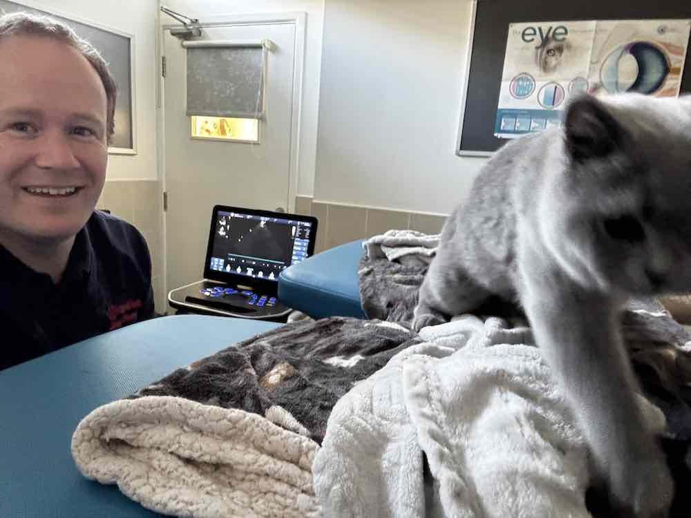
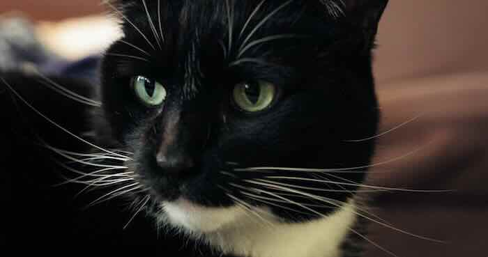

Hypertrophic Cardiomyopathy in Cats
❤️ A Detailed Guide for Cat Owners and Breeders
Published on: September 22, 2025
Reviewed on: September 22, 2025

When a veterinarian mentions a heart murmur or a diagnosis of hypertrophic cardiomyopathy (HCM), it can feel overwhelming.
This article takes a deep look at what HCM really is, why it can be so tricky to detect, and what tests and treatments matter most.
If you’re a cat owner - or breeder - wanting more than a superficial overview, this is for you.
What Exactly Is HCM?
The name tells the story:
- Hypertrophic = thickened
- Cardio = heart
- Myopathy = muscle disease
In HCM, the heart muscle (myocardium)—especially the powerful left ventricle—becomes abnormally thick.
This thickening is not healthy “athlete’s heart” muscle.
It is stiffer and less elastic, which makes it harder for the ventricle to relax and fill with blood between beats.
Think of a room where the walls slowly thicken inward. The space inside (the ventricle chamber) shrinks. Blood coming from the left atrium has less room to enter, and the heart struggles to maintain efficient pumping.
As filling becomes more difficult, the left atrium enlarges in response. This enlargement is an important turning point because it signals a higher risk of complications like blood clots and congestive heart failure.
How Common Is It?
Studies suggest around one in seven cats has some degree of HCM. Fortunately, only a minority ever develop life-threatening problems.
The disease exists on a wide spectrum:
- Cats who live a normal lifespan and never develop symptoms
- Cats with mild thickening that remains stable for years
- Cats with aggressive, early-onset disease that progresses rapidly
Why Does It Happen?
A Genetic Puzzle
HCM is fundamentally a genetic disorder of the proteins that make up heart muscle fibres—specifically actin and myosin, which drive each contraction and relaxation. Even a small mutation there can make the heart work less efficiently, triggering a cycle of thickening and stiffness.
Researchers believe there are many different mutations that can all produce the same thickened appearance. In humans, more than 1,000 mutations have been identified; in cats, only a handful so far. Veterinary cardiologists are a long way behind!
Some mutations cause only mild changes that never affect quality of life, while others trigger rapid and severe thickening—even in young cats.
Breeds and Family Risk
Certain breeds are more likely to carry these mutations:
- Maine Coon
- Ragdoll
- British Shorthair
- Other pedigree cats such as Sphynx or Scottish Fold (sporadic reports)
However, HCM can occur in any breed or mixed-breed cat. Because the disease is inherited, screening related cats, such as siblings, parents and offspring of any affected cat, is valuable - even if they appear healthy.
Breeders should also prioritise echocardiographic screening before mating, particularly in the high risk breeds. Genetic tests do exist, but at this stage cardiologists are divided as to how useful they really are. We are probably a long way from truely understanding the genetics of this disease.
Common Myths (and the Truth Behind Them)
Myth 1: No heart murmur = no heart problem
Not all heart disease makes noise.
In HCM the muscle thickens, but blood flow may remain smooth, producing no murmur at all.
A perfectly quiet chest does not guarantee a healthy heart.
Myth 2: A quiet murmur means a mild problem
The loudness of a murmur reflects the amount of turbulence, not disease severity. Some cats with severe thickening have silent hearts, while others with very mild changes produce surprisingly loud murmurs.
Why Murmurs Occur
Many murmurs in HCM come from a dynamic left-ventricular outflow tract obstruction (LVOTO).
A thickened area near the top of the ventricle creates a temporary narrowing as the heart contracts. During the power stroke (systole), blood speeds up through this narrowing and creates turbulence—a murmur.
This is an indirect consequence of HCM, not a measure of how thick the muscle is overall.
Severe thickening isolated at the heart’s apex might be silent, while a small septal bulge near the outflow can be very noisy yet clinically mild.
Myth 3: Cats with serious disease will show clear warning signs
Unfortunately, cats are experts at hiding illness.
Even advanced HCM can remain clinically silent until a crisis occurs. It can catch everyone out, including us cardiologists. There are a few things we can monitor and watch for though, such as the sleeping respiratory rate.
Signs and Complications
Early HCM is usually symptom-free.
Subtle clues, when present, may include:
- Rapid breathing at rest
- Sudden fatigue or stopping during play
- Brief open-mouth breathing after exertion
The most serious complications are:
- Thromboembolism (blood clot) – a clot forms in the heart and travels to the back legs, causing sudden paralysis and severe pain.
- Congestive heart failure (CHF) – fluid accumulates in or around the lungs as back-pressure builds, leading to laboured breathing.
Predicting which cats will suffer these complications remains one of the biggest challenges in feline cardiology.
Diagnosis: Piecing Together the Puzzle
Because HCM is variable and often silent, diagnosis requires a combination of detective work.
1. Veterinary Examination
Your vet may detect:
- A murmur (often from LVOTO)
- A gallop rhythm (extra heart sound)
- An arrhythmia (an irregularity in the regular beating of the heart)
Any of these findings should trigger further investigation.
2. NT-proBNP Blood Test
This test measures a hormone released when the heart is under strain. A normal result makes severe disease less likely, while an elevated value supports the need for echocardiography.
It’s widely available and can often be run in-house as a screening tool, especially before anaesthesia or if a relative has HCM.
3. Echocardiography (Heart Ultrasound)
The gold standard. Only an echocardiogram can:
- Measure heart wall thickness
- Assess chamber size and filling
- Identify left atrial enlargement
- Detect outflow obstruction or “smoke” (blood stasis) that signals clot risk
Without an echo, staging is largely guesswork.
4. Chest X-rays
X-rays can show heart enlargement or fluid in the lungs but often miss the inward thickening of HCM. They reveal the heart’s silhouette only, not the muscle detail and changes going on inside the heart. Its like judging room sizes from a house’s outline.
Staging the Disease
Veterinary cardiologists use a modified ACVIM staging system to guide treatment and monitoring:
| Stage | Description | Typical Management |
|---|---|---|
| B1 | Heart muscle thickened but no left atrial enlargement | Monitoring only; regular check-ups and echocardiograms |
| B2 | Left atrium enlarged; higher risk of clots or heart failure | Consider antiplatelet therapy (e.g., clopidogrel); closer follow-up |
| C | Congestive heart failure (fluid in or around the lungs) | Diuretics (e.g., furosemide/torasemide); oxygen if needed |
| D | Heart failure refractory to standard treatment | Higher diuretic doses; advanced or combination therapies |
Treatment and Ongoing Care
There is no cure and no medication proven to stop the genetic process, but treatment can:
- Control symptoms in stages C and D
- Reduce the risk of clots from stage B2 onward
Common therapies include:
- Antiplatelet/anticoagulant drugs (clopidogrel, rivaroxaban, aspirin) to reduce clot formation
- Beta-blockers to slow the heart rate and reduce outflow obstruction in selected cases
- Diuretics (furosemide or torasemide) to relieve fluid build-up in congestive heart failure
- ACE inhibitors (e.g., benazepril) are used less often but may be considered in specific scenarios
Monitoring
- At home: Count your cat’s sleeping respiratory rate (SRR). A persistent rise is an early warning of fluid accumulation.
- At the clinic: Regular check-ups and repeat echocardiograms to track heart size and function.
Lifestyle adjustments such as maintaining a healthy weight and minimising stress are sensible, though no specific diet has been proven to slow disease.
There has been a lot of recent interest in a medication called ‘rapamycin’, now recently (2025) approved in the US for pre-clinical use. Most cardiologists are looking at this with a lot of cautious interest. But we don’t think any results are particularly impressive just yet, and don’t advise trying to obtain this drug if not directly recommended by your cardiologist.
Have a look at our full article on the topic here.
Prognosis
HCM is one of the most variable conditions in veterinary cardiology:
- Some cats remain stable for life without treatment.
- Others develop mild disease that progresses slowly.
- A small but significant minority develop sudden, severe complications.
Early detection and careful staging are key to predicting risk and tailoring treatment.
Case Study: Luna
To bring all of this together, consider Luna, a five-year-old domestic shorthair.
She came to her veterinarian for a routine vaccination and check-up with no outward problems.
During the exam the vet heard a faint heart murmur—barely a whisper. As it’s so quiet, its tempting to think it isn’t important.
But as we know, this isn’t a reliable thing in cats. Murmur loudness is not correlated with disease.
Thankfully the vet recommended a proBNP blood test. Unfortunately it came back abnormal, so a heart scan (echocardiogram) was recommended.
The echocardiogram revealed a thickened heart muscle consistent with HCM and a large left atrium with swirling blood (“smoke”), a warning sign for clot formation.
Luna was classified as Stage B2.
Her treatment plan included:
- Clopidogrel, an anticoagulant drug to reduce clot risk, by inhibiting platelets.
- Home monitoring of her sleeping respiratory rate to detect early fluid build-up
With careful monitoring, Luna may never develop heart failure - and many cats discovered in this way go on to live long, happy lives.
Key Takeaways
- Don’t panic if your vet hears a murmur: it’s a reason to investigate, not a diagnosis.
- Silent disease exists - a normal stethoscope exam does not rule out HCM.
- Echocardiography is the only definitive test for diagnosis and staging.
- Regular veterinary check-ups and early screening are the best tools to protect your cat’s heart.
Check out my video on the same topic if you want a more in depth explanation: